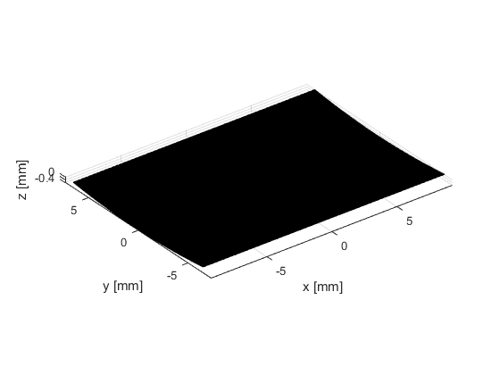
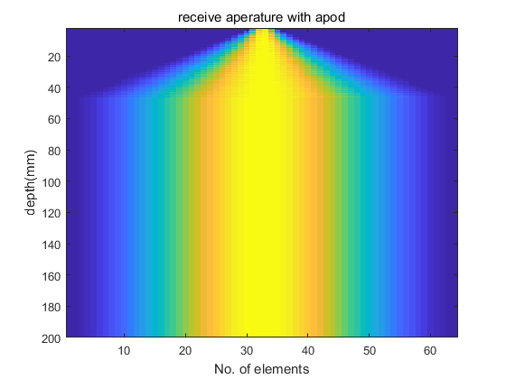
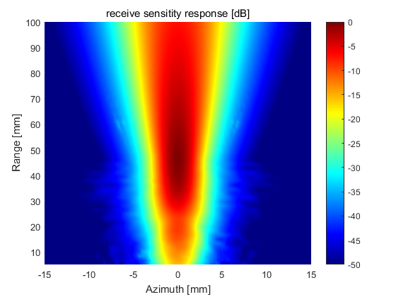
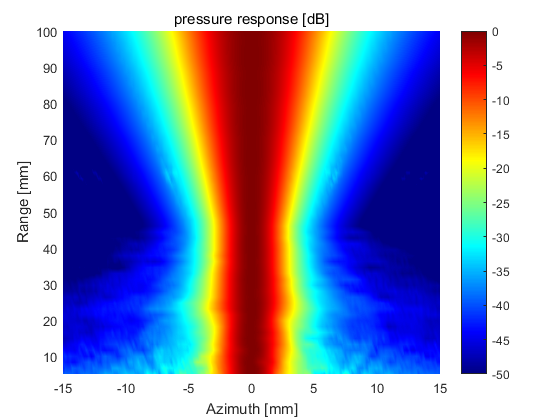
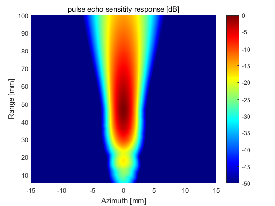
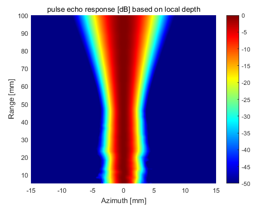

Contents
close all;
clear all;
no_elements = 64;
pitch = 0.290e-3;
kerf = 0.025e-3;
width = pitch - kerf;
height=13e-3;
no_sub_x = 5;
no_sub_y = 15;
focus = [0 0 60]/1000;
steeringAngle = 0;
Rfocus = 60e-3;
focusRange=60e-3;
focus = focusRange*([sin(steeringAngle*pi/180),0,cos(steeringAngle*pi/180)]);
c =1540;
field_init(0);
fn_receive = 2.5;
apodTx = 0;
apodRx = 0;
Th_tnx = xdc_focused_array(no_elements, width, height, kerf, Rfocus, no_sub_x, no_sub_y, focus);
Th_rcv = xdc_focused_array(no_elements, width, height, kerf, Rfocus, no_sub_x, no_sub_y, focus);
figure;
show_xdc_geir(Th_tnx, 1);
axis equal;
view(3);
fs = 50e6;
f0 = 2.5e6;
t0 = 1/f0;
dt = 1/fs;
set_sampling(fs);
*------------------------------------------------------------*
* *
* F I E L D I I *
* *
* Simulator for ultrasound systems *
* *
* Copyright by Joergen Arendt Jensen *
* Version 3.24, May 12, 2014 (Matlab 8.20 version) *
* Web-site: field-ii.dk *
* *
* This is citationware. Note the terms and conditions *
* for use on the web-site at: *
* field-ii.dk/?copyright.html *
* It is illegal to use this program, if the rules in the *
* copyright statement is not followed. *
*------------------------------------------------------------*
Read rectangular data for plotting....
Plots aperture with physical element number...
Warning: Remember to set all pulses in apertures for the new sampling frequency

Impulse setup
t_ir = -2/f0:1/fs:2/f0;
Bw = 0.6;
impulse_response = gauspuls(t_ir, f0, Bw);
xdc_impulse (Th_tnx, impulse_response);
xdc_impulse (Th_rcv, impulse_response);
excitation = square(2*pi*f0*(0:dt:1.5*t0));
xdc_excitation(Th_tnx, excitation);
Nfr = 300;
focal_area_start = 2/1000;
focal_area_end = 200/1000;
the_regions = linspace(focal_area_start, focal_area_end, Nfr+1);
the_regions_times = (the_regions(1: end -1)/c)';
the_regions_height = (focal_area_end - focal_area_start)/Nfr;
the_regions_focals = the_regions(1:end -1) + the_regions_height/2;
num_active_ele = round(the_regions_focals/(fn_receive*(width+kerf)));
num_pre_ele = 0;
num_post_ele = 0;
num_active_ele_window = 0;
apodization_aperature = zeros(Nfr, no_elements);
for ii = 1:Nfr
if num_active_ele(ii)> no_elements
num_active_ele(ii) = no_elements;
end
num_pre_ele(ii) = ceil(no_elements/2 - num_active_ele(ii)/2);
num_post_ele(ii) = no_elements - num_pre_ele(ii) - num_active_ele(ii);
num_active_ele_window = hanning(num_active_ele(ii))';
apodization_aperature(ii,:) = [zeros(1,num_pre_ele(ii)) num_active_ele_window zeros(1,num_post_ele(ii))];
end
xdc_apodization(Th_rcv, the_regions_times, apodization_aperature);
figure;
imagesc(1:no_elements, the_regions_focals*1000, apodization_aperature);
title('receive aperature with apod');
xlabel('No. of elements');
ylabel('depth(mm)');
receiveAngle = 0;
xdc_dynamic_focus(Th_rcv, 0, receiveAngle*pi/180, 0);

setup tx Apod
txApodWeights = ones(1, no_elements);
xdc_apodization(Th_tnx, the_regions_times, apodization_aperature);
pressure response from focus point
Nx = 161; Nz = 59;
x0=linspace(-15e-3,15e-3,Nx);
z0=linspace( 5e-3,100e-3,Nz);
[X,Z]=meshgrid(x0,z0);
measure_point = [X(:), zeros(length(X(:)),1),Z(:)];
receive sensitity response
[hp_rv0, t_start]=calc_hp(Th_rcv, measure_point);
figure;
bp = sqrt(mean(hp_rv0.^2));
bp = reshape(bp, Nz, Nx);
bp = bp/max(bp(:));
pcolor(x0*1000,z0*1000, 20*log10(bp));
shading interp
title("receive sensitity response [dB]")
xlabel('Azimuth [mm]');
ylabel('Range [mm]');
caxis([-50 0]);
colormap(jet(256));
colorbar
3 seconds used for the calculation

pressure response from XZ plane based on local depth max
figure;
bp = sqrt(mean(hp_rv0.^2));
bp = reshape(bp, Nz, Nx);
bp = bp./repmat(max(bp')', 1,Nx);
pcolor(x0*1000,z0*1000, 20*log10(bp));
shading interp
title("pressure response [dB]")
xlabel('Azimuth [mm]');
ylabel('Range [mm]');
caxis([-50 0]);
colormap(jet(256));
colorbar

pulse echo response
[hhp_rv0, t_start]=calc_hhp(Th_tnx, Th_rcv, measure_point);
figure;
bp = sqrt(mean(hhp_rv0.^2));
bp = reshape(bp, Nz, Nx);
bp = bp/max(bp(:));
pcolor(x0*1000,z0*1000, 20*log10(bp));
shading interp
title("pulse echo sensitity response [dB]")
xlabel('Azimuth [mm]');
ylabel('Range [mm]');
caxis([-50 0]);
colormap(jet(256));
colorbar
5 seconds used for the calculation

pressure response from XZ plane based on local depth max
figure;
bp = sqrt(mean(hhp_rv0.^2));
bp = reshape(bp, Nz, Nx);
bp = bp./repmat(max(bp')', 1,Nx);
pcolor(x0*1000,z0*1000, 20*log10(bp));
shading interp
title("pulse echo response [dB] based on local depth")
xlabel('Azimuth [mm]');
ylabel('Range [mm]');
caxis([-50 0]);
colormap(jet(256));
colorbar
